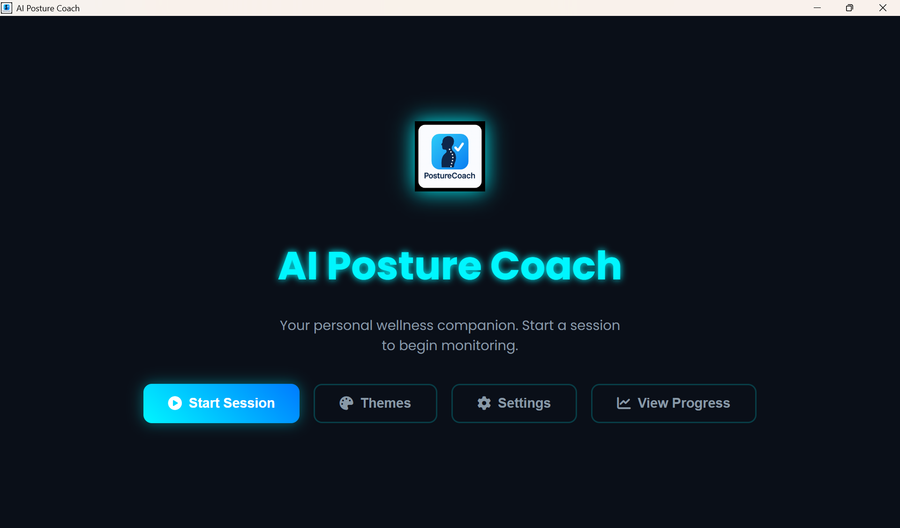
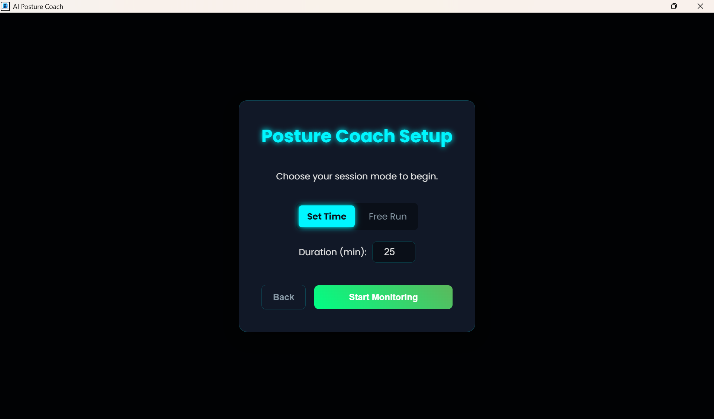
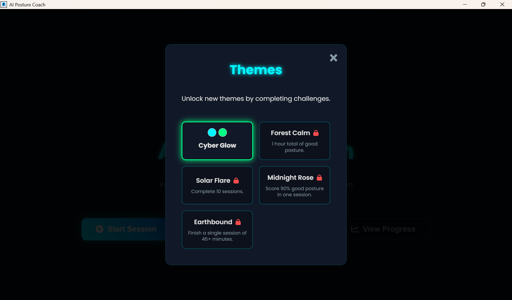
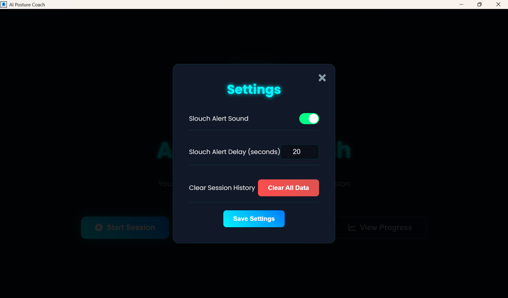
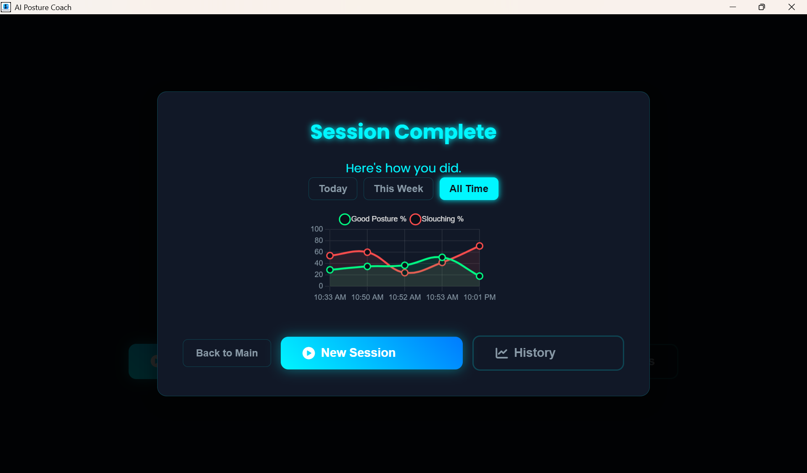
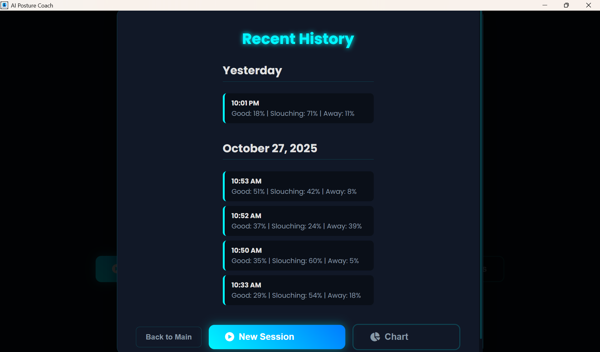
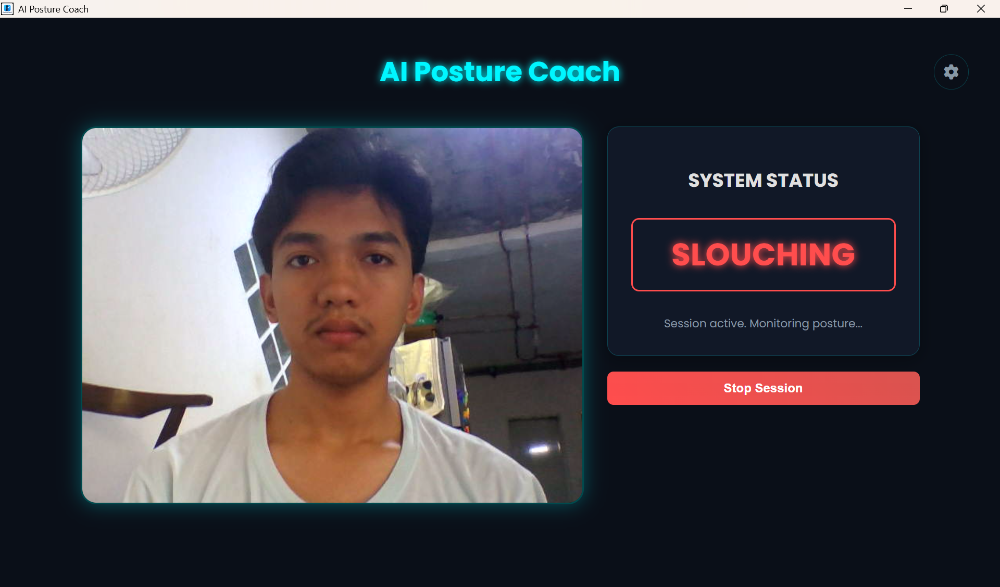
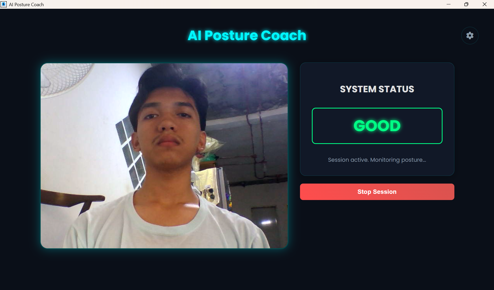
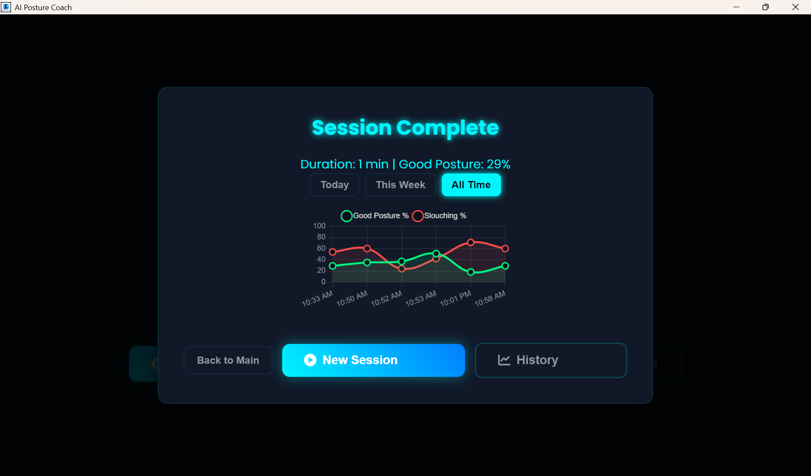

OVERVIEW
Project Overview
The Posture Detection App is an AI-powered Electron desktop application that uses a custom-trained machine learning model (Google Teachable Machine + PoseNet) to monitor a user's posture in real time through their webcam. It classifies posture into three states — Good Posture, Slouching, and Away — and alerts the user with a sound when poor posture is held for too long.
The app features a multi-window Electron architecture where a hidden background worker handles all AI inference separately from the UI, keeping the interface fast and responsive. Users can run timed or free-mode sessions, track their posture history over time, view progress charts, customize settings, and unlock visual themes by hitting posture goals — making it both functional and engaging.
MY ROLE
- Model Training
- Functionality Implementation
- UI/UX Designer
TECH STACK
KEY FEATURES
- Real-time AI posture detection via webcam — classifies Good Posture, Slouching, and Away states
- Background worker window handles AI inference separately to keep the UI smooth
- Sound alert triggered after user slouches for a configurable delay (default 3 seconds)
- Two session modes: Timed (set duration with countdown) and Free mode
- Session summary after each session — shows Good %, Slouching %, and Away % breakdown
- Session history saved locally — filterable by Today, This Week, or All Time
- Progress chart (Chart.js line graph) visualizing good posture vs. slouching over sessions
- Settings panel — toggle sound on/off, adjust slouch alert delay
- Theme system with 5 unlockable visual themes (earned by hitting posture milestones)
- Splash screen on launch for a polished app feel
- Pose skeleton overlay drawn on webcam canvas using PoseNet keypoints
PROBLEM → SOLUTION
Problem: People who spend long hours at a computer often develop poor posture without realizing it, leading to back and neck problems over time. Awareness is the first step to correcting it — but there's no passive way to monitor yourself.
Solution: Built a desktop app that passively watches through the webcam using a trained AI model and alerts users in real time when slouching is detected — turning an invisible habit into something measurable and correctable.
CHALLENGES
- Training a reliable model across varying lighting conditions, camera angles, and body types
- Collecting a diverse and balanced dataset for accurate classification
- Architecting a multi-window Electron app where a hidden worker runs AI inference and communicates with the UI via IPC messaging
- Designing a gamified theme unlock system that rewards real posture improvement without disrupting the core UX
LEARNINGS
- Machine learning fundamentals — training image classification models and understanding confidence thresholds
- The critical importance of dataset quality, diversity, and balance in model accuracy
- Multi-process Electron architecture — using IPC (Inter-Process Communication) to separate UI and background AI workers
- Integrating a TensorFlow.js / PoseNet model into a real desktop application
- UI/UX design for wellness tools — balancing information density with a clean, non-intrusive interface users are comfortable leaving open all day
- Building a theme and achievement system to add long-term engagement to a utility app